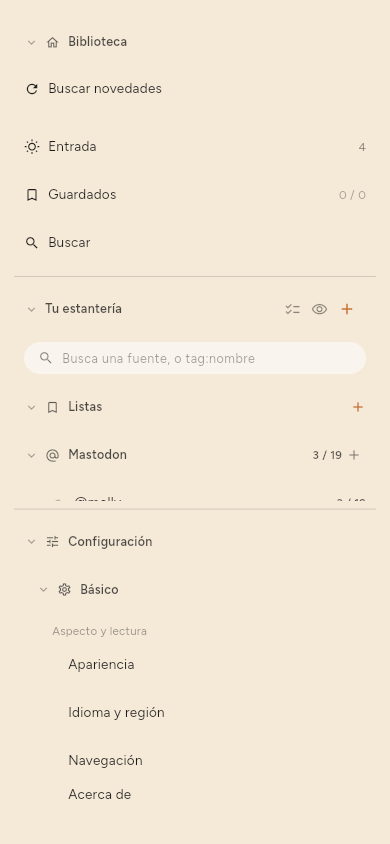

← Teclado · Contenido · Dónde se guardan las cosas →
Referencia de la configuración
Configuración está al pie de la estantería. Sus páginas están en dos grupos: Básico, las que cambia la mayoría de la gente, y Avanzado, el resto. Acerca de está aparte, debajo de ellos.

Básico
- Apariencia: el tema, el texto, la lista, el artículo y la disposición.
- Idioma y región: el idioma de la interfaz y cómo se escriben las fechas y las horas.
- Navegación: cuándo cuenta como leído un artículo abierto, los gestos de deslizar y si la estantería es una barra lateral o está oculta.
- Teclado: la lista de atajos.
- Compartir: qué envía la acción de compartir.
- Notificaciones: anuncios y avisos.
- Fuentes: todo lo que sigues, con el filtro, las casillas de selección y las acciones en bloque descritas en Gestionar las fuentes, y el orden en que se mantiene la lista.
- Descarga: con qué frecuencia comprobar, con qué conexiones y con batería, y cuántas fuentes a la vez.
- Resúmenes: si se escriben resúmenes, dónde, cuántos a la vez y por comprobación, el idioma de los resúmenes y las etiquetas sugeridas.
- Trabajo en segundo plano: qué muestra la franja de estado mientras la aplicación trabaja y, en un teléfono, Configuración › Básico › Trabajo en segundo plano › Con la pantalla apagada › Seguir trabajando con la pantalla apagada, que mantiene en marcha las comprobaciones, los resúmenes, las descargas de modelos y la sincronización después de que se apague la pantalla.
- Etiquetas: el vocabulario: todas las etiquetas, para renombrarlas, fusionarlas o quitarlas.
Conviene conocer Configuración › Básico › Navegación › Marcar como leído: Nunca significa que solo tú marcas las cosas como leídas, Inmediatamente significa que abrir cuenta, Después de unos segundos significa que pasar de largo no cuenta, y Cuando llegas al final espera al final del artículo.
Avanzado
- Modelo en el dispositivo: los modelos de este dispositivo, la búsqueda de modelos nuevos y el procesador en el que funciona un modelo.
- Servidor LLM: la dirección, el modelo y la clave de un servidor que hace resúmenes.
- Sincronización: activar o desactivar la sincronización, la dirección del servidor, cuándo se ejecuta por su cuenta, si este dispositivo lo guarda todo, otro dispositivo, el código de recuperación y borrar la copia del servidor.
- Cuentas: los sitios en los que este dispositivo tiene la sesión iniciada, donde la versión permite iniciar sesión.
- Tokens y API y MCP: solo en Premium, porque las tres puertas lo están: una versión gratuita no tiene pestaña ni puertos, en lugar de interruptores que se niegan a funcionar.
- Tus datos: exportar, importar, copia de seguridad y restauración, fuentes duplicadas, cuánto tiempo se guardan el texto y las imágenes de los artículos, y la copia de seguridad del sistema.
- Estadísticas: lo que han consumido los resúmenes y lo que contiene la biblioteca.
- Depuración: el registro de actividad: todo lo que se ejecutó y todo lo que falló, que es el primer sitio donde mirar cuando algo no ha pasado.
- Desarrollo: Rellenar los detalles que faltan, que vuelve a descargar los metadatos, una comparación de modelos, experimentos y Borrarlo todo.
API y MCP (solo Premium)
Tres puertas, cada una con su propio puerto, su propia elección de las direcciones en las que responde, su propio token y su propio interruptor: la API REST, por la que una extensión del navegador u otro programa mete algo; Métricas, para un sistema de monitorización; y MCP, en la que responde un modelo. Empiezan en 8765, 8766 y 8767, y ninguna necesita que otra esté abierta.
Un token abre solo lo que tiene marcado, en Configuración › Avanzado › Tokens › Tokens › Editar permisos. Los permisos están plegados por tema, y el campo de encima los filtra por nombre o descripción. Los ajustes rápidos rellenan las marcas: Todo menos borrar, Solo lectura, Extensión del navegador, que marca exactamente lo que usa la extensión del navegador, y Nada.
Usar TLS (HTTPS), debajo de las tres puertas, está apagado por defecto y cambia las tres a HTTPS a la vez. La primera vez, la aplicación crea un certificado para este dispositivo, con su nombre de host y sus direcciones, y guarda la clave con los demás secretos. A partir de ahí, los clientes deben usar https:// y confiar en ese certificado: la página muestra su huella SHA-256, con un botón para copiarla, para que un cliente pueda fijarla. Certificado nuevo crea otro, y a cada cliente que fijó la huella antigua hay que darle la nueva. El envoltorio de línea de comandos de MCP recoge el certificado por sí solo; reinicia su cliente después de un certificado nuevo.
El lector de terminal no es una de estas puertas. Abre directamente el archivo de la biblioteca, no necesita ninguna puerta abierta ni ningún puerto, y es gratuito.
Tus datos
Exportar e Importar, una sección cada una: OPML para las fuentes, y tu biblioteca completa. Copia de seguridad y restauración copia toda la biblioteca a un archivo y de vuelta; Configuración › Avanzado › Tus datos › Copia de seguridad y restauración › Incluir inicios de sesión y tokens, apagado cada vez, añade el inicio de sesión de cada cuenta y cada token, cifrados con una frase de contraseña que escribes dos veces. Ese archivo y su frase de contraseña juntos inician sesión en esas cuentas. Una restauración pide la frase de contraseña; una incorrecta u olvidada sigue restaurando la biblioteca y deja los inicios de sesión de este dispositivo como estaban. También está Configuración › Avanzado › Tus datos › Fuentes duplicadas, que busca el mismo canal seguido con dos direcciones y ofrece fusionar las parejas que encuentra.
Acerca de
La versión, las licencias de código abierto, la política de privacidad, la licencia de usuario final y las condiciones. En Linux, Buscar actualizaciones. La política de privacidad, la licencia y las condiciones se abren dentro de la aplicación, a partir de la copia con la que se creó la aplicación, así que funcionan sin conexión. Open on the site en esa página muestra la versión más reciente en tu navegador (Configuración › Acerca de › Política de privacidad, y lo mismo para las otras dos).